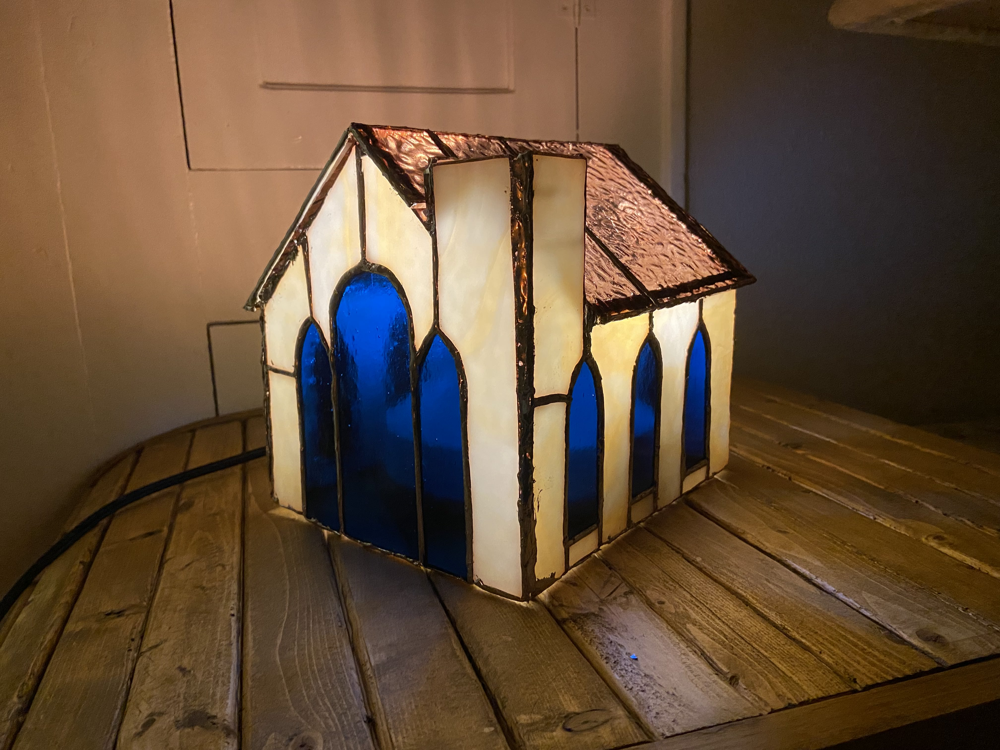
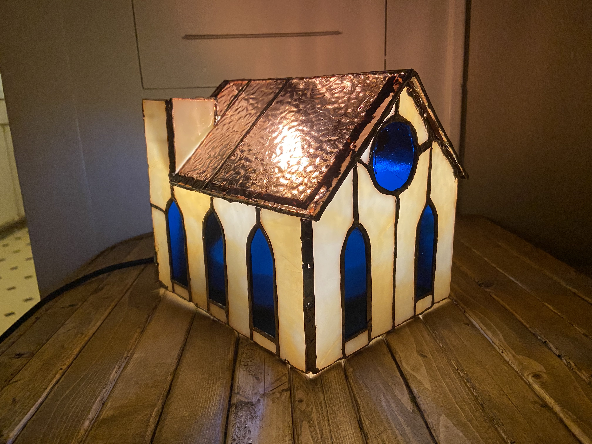

Stained Glass
I've been interested in stained glass for about two years now but only recently have acquired tools with high enough quality to start making some more complex pieces. Luckily, I live very close to a stained glass store which makes almost a little it easy now to buy more supplies on a whim.
In the short-term, I'm interested in making 3D structures - specifically light-up snowbank buildings for this upcoming Christmas. Longer-term I would like to move further down the complexity scale and make my own Tiffany lamps but those are already orders of magnitude more work than anything I've done so far!

